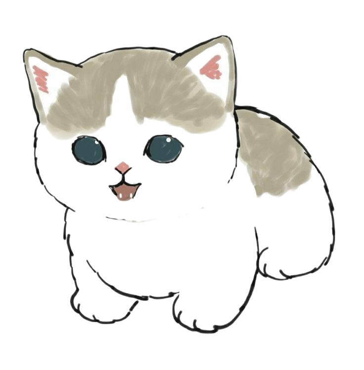

Мои развлечения
Мультфильм

Я посмортела различные мультфильмы, но этот самый лучший и интересный. Мультифльм про демонов, а главные героини оходятся за ними. Этот мультфильм понравится тем людям, котрые слушать музыку и интерисуются артистами.
Кино
Мы сходили на фильм "Лило и Стич". Мне очень понравилось!
Дорама
Очень интересная дорама с хорошим смыслом, мне очень понравилась. Называется она "Истиная красота". В этой дораме мне показали, что красота это не самое в жизни, а душа. В данной дораме хорошо представлена культура Кореи.


